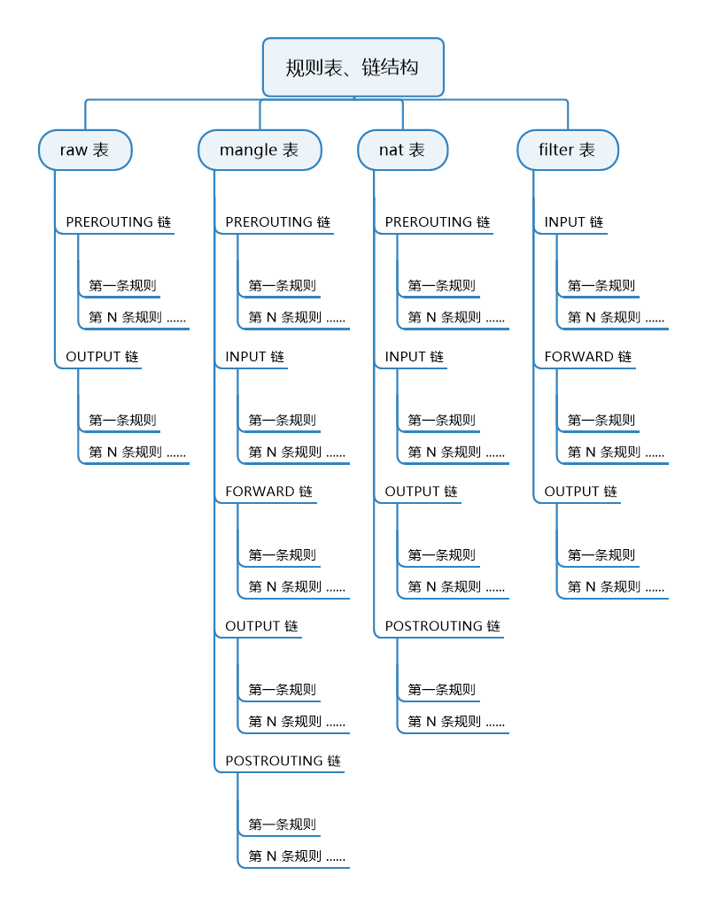

一、简介 netfilter/iptables（简称 iptables）组成 Linux 平台下的包过滤防火墙
iptables 组件是一种工具，也称为用户空间，它使插入、修改和除去信息包过滤表中的规则变得容易
netfilter 组件也称为内核空间，是内核的一部分，由一些信息包过滤表组成，这些表包含内核用来控制信息包过滤处理的规则集
安装 iptables
1 yum -y install iptables iptables-services
重启：systemctl restart iptablesservice iptables save
二、常用参数 iptables + -t 表名 + 规则/链管理参数 + 匹配参数 + 动作类型参数
1 2 3 4 5 6 7 8 9 10 11 12 13 14 15 16 17 18 19 20 21 22 23 24 25 26 27 28 29 30 31 32 33 34 35 36 37 38 39 40 41 42 43 44 45 46 47 48 49 50 51 52 53 54 55 # 选择表
三、扩展模块 使用方法：iptables + -m + 扩展模块名iptables + -m + 扩展名 + -h 查看
limit（速率限制） 1 2 3 4 # 每分钟允许通过 5 个 icmp 包（默认为 3/小时，秒：/sec 分钟：/minute 小时：/hour 天：/day）
multiport（ 多端口匹配） 1 2 # 匹配 22，端口（最多可指定15个端口）
iprange（匹配指定范围内的地址） 1 2 # 匹配指定范围内的地址
string（字符串匹配） 1 2 # 当服务端返回数据报文检查到有关键字 “test" 时，则丢弃该报文（能够检测到报文应用层中的字符串 注：该条规则需添加到 OUTPUT 链）
connlimit（连接数限制） 1 2 3 4 5 6 # 限制同一 IP 最多同时 10 个 http 连接
recent（时间限制） 1 2 3 4 5 6 7 8 9 10 11 12 13 14 15 16 --name # 设置列表名称
state（状态检查） 1 2 3 4 5 6 7 8 9 NEW：新建立一个会话
四、规则表和规则链 规则表（tables） 规则表提供特定的功能（内置了4个表），类似用户组，每个组都有不同的功能，并且都有对应的用户（规则链）
1 2 3 4 filter # 负责过滤功能（内核模块：iptables_filter）
规则表优先顺序（从左往右）：raw <--- mangle <--- nat <--- filter
规则表对应的规则链：
1 2 3 4 raw 表：PREOUTING、OUTPUT

规则链（chains） 规则链是规则的集合。对特定的数据包设置相应的规则（读取规则链时是按照从上往下的顺序）
1 2 3 4 5 INPUT # 处理入站的数据包
入站顺序（从左往右）：PREROUTING <--- INPUTOUTPUT <--- POSTROUTINGPREROUTING <--- FORWARD <--- POSTROUTING
五、实例 查看/删除 规则 1 2 3 4 5 6 iptables -L # 列出所有规则
在指定表中新建规则（如不指定，则默认为 filter 表） 1 2 # 在 nat 表中开放 80 端口
设置白名单 1 2 3 4 5 # 允许 192.168.1.0/24 网段的主机访问
指定范围 1 2 3 4 # 指定 IP 范围
端口映射 1 2 # 当别的主机访问本地 80 端口时会被重定向到 8080 端口
禁止 1 2 3 4 5 6 7 8 # 禁 Ping